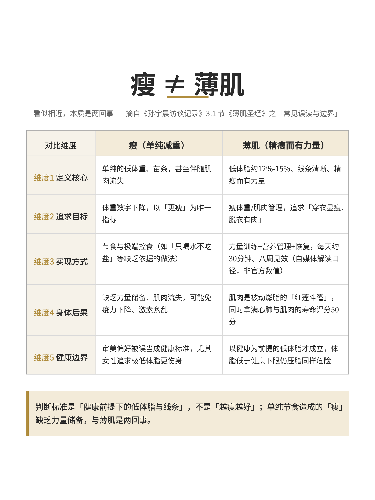

首页 / 薄肌行动手册 · 在线阅读
LEAN MUSCLE PLAYBOOK
薄肌行动手册
围绕《孙宇晨访谈记录》整理的可执行训练资料库：访谈整理、AI 认知观点、8 周实操行动清单、打卡工具与可视化素材，让「照着做」这件事有据可依。
书中口径：每天约 30 分钟 · 八周见效 · 三步启动法 实操编排：9 个动作 · 4 个阶段 · 每周 3 次力量 + 2–3 次有氧 口径纪律：书中口径 / 公开权威资料
lean-muscle-playbook
薄肌行动手册：围绕《孙宇晨访谈记录》整理的可执行训练资料库。
项目定位
本项目以一次公开访谈为起点，沉淀「薄肌训练」主题下的访谈整理、AI 认知观点、 8 周实操行动清单、打卡工具与可视化素材，目标是让「照着做」这件事有据可依。
口径纪律（重要）
- 本仓库内容区分为「书中口径」与「公开权威资料」：书中仅公开每天约 30 分钟、 八周见效、三步启动法等表述，未披露逐周动作明细；逐周训练编排依据卫健委、 三甲医院与运动科学综述等公开资料整合，属整理者的实操建议，非访谈原文。
- 不编造未披露信息；体脂已低于健康下限、有慢性病或孕期者应先咨询专业人士； 本仓库不构成医学、营养学或运动处方建议。
内容地图
| 路径 | 内容 |
|---|---|
docs/black-book.md |
黑皮书正文源（六章，含第六章「训练手册：8 周实操行动清单」） |
docs/interview-notes.docx |
访谈整理原件（Word 版，含三书扩写；正文真源见 black-book.md） |
docs/glossary.md |
术语统一口径（薄肌 / 瘦≠薄肌 / 搏击仅作术语与电影专名） |
guides/practice-guide.html |
薄肌实操指南（可浏览 / 打印） |
guides/8-week-plan/ |
8 周实操行动清单分阶段明细（自黑皮书第六章抽取） |
assets/lean-vs-thin.png |
「瘦≠薄肌」对比图 |
templates/checkin.xlsx |
8 周训练打卡表（含完成勾选下拉、动作速查卡） |
templates/checkin-print.pdf |
打卡表可打印 A4 版 |
scripts/ |
版本化生成脚本（打卡表、对比图、打印版、黑皮书）与使用说明 |
site/ |
在线阅读版页面（静态站点，由 scripts/build_site.py 生成，含导航 / 目录 / 资源引用） |
在线阅读版（site/）
site/ 是把 README、黑皮书、术语表、实操指南与 8 周行动清单组织成多页静态站点的构建产物， 带统一顶栏导航、页内目录、正文排版与可下载资源；scripts/build_site.py 可从仓库源重新生成。
- 本地预览：直接打开
site/index.html（或用python3 -m http.server -d site）。 - 部署到 GitHub Pages：仓库 Settings → Pages → Source 选择 GitHub Actions；
.github/workflows/pages.yml会把site/发布为https://<owner>.github.io/lean-muscle-playbook/，内容更新后随site/**变更自动部署。 - 修改内容请改各源文件（
docs/、guides/等）后重跑python3 scripts/build_site.py，再提交 site/ 变更，避免直接改站点页造成多版本漂移。
维护与更新机制
- 内容真源：黑皮书 markdown 源为正文真源；PDF / HTML 等为构建产物， 修改源文件后重生成，避免多版本漂移。
- 更新路径：新访谈 / 新公开资料 → 更新
docs/源 → 重跑生成脚本 → 提交变更 → 更新 README 与版本 tag。 - 口径核对：新增训练建议时同步标注来源层级（书中 / 公开权威 / 整理者整合）， 不得以惯例或记忆代替可追溯来源。
版权与许可
- 内容基于公开访谈整理，仅供学习参考；详见 LICENSE。
- 原始素材出处与整理者边界在 README 与各文档中注明。